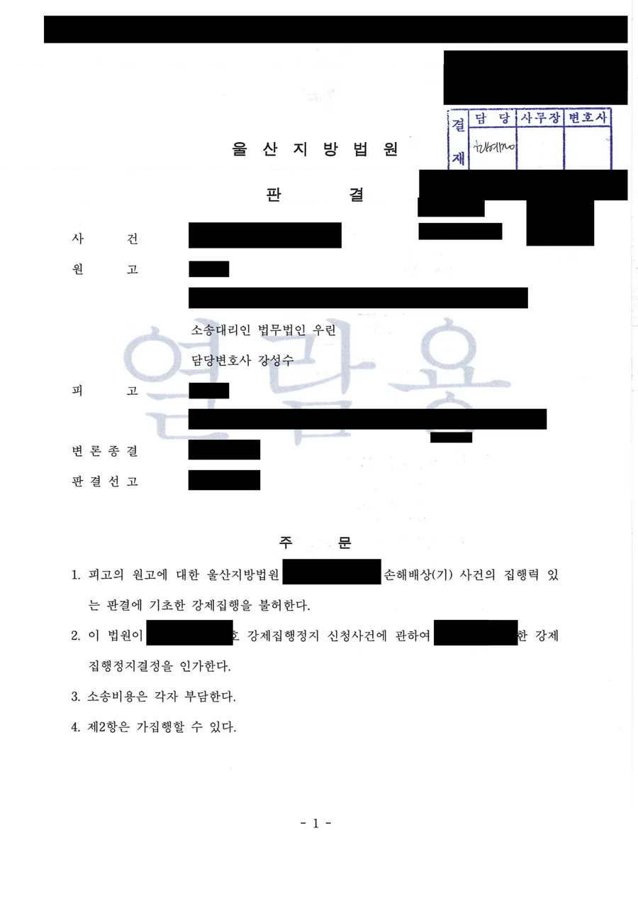

핵심 결과
돈을 갚겠다는데 상대가 받지 않는 경우가 있습니다.
받아버리면 더 받을 수 없게 되니, 일부러 거부하고 경매를 진행하는 것입니다.
이 사건이 그랬습니다.
의뢰인은 판결에서 정해진 원금과 지연이자, 경매신청비용까지 계산해 전액을 준비했습니다.
상대는 그보다 두 배가 넘는 금액을 요구하며 수령을 거부했고, 그 사이 아파트 지분에 강제경매가 개시됐습니다.
법무법인 우린은 변제공탁으로 채무를 소멸시킨 뒤 청구이의의 소를 제기했습니다.
법원은 강제집행을 불허하고 강제집행정지결정을 인가했습니다.
| 구분 | 내용 |
|---|---|
| 사건 분야 | 청구이의의 소 (민사집행법 제44조) |
| 문제 상황 | 판결금 전액을 제공했으나 상대가 수령 거부 |
| 상대 요구 | 실제 채무액의 두 배가 넘는 금액 |
| 진행된 절차 | 아파트 지분에 강제경매 개시 |
| 핵심 대응 | 변제공탁 후 청구이의의 소 + 강제집행정지 신청 |
| 최종 결과 | 강제집행 불허, 집행정지결정 인가 |
어떤 사건이었나
상대는 앞선 손해배상 소송에서 이겼습니다.
원금 1,500만 원과 이에 대한 지연이자를 지급하라는 판결이었습니다.
의뢰인은 그 판결에 따라 갚기로 했습니다.
원금, 판결에서 정한 이율로 계산한 지연이자, 상대가 낸 경매신청비용까지 모두 더했습니다.
합계는 약 2,280만 원이었습니다.
이 돈을 상대에게 실제로 제공했습니다.
그런데 상대는 5,000만 원을 요구하며 수령을 거부했습니다.
그러는 사이 의뢰인이 살고 있던 아파트 지분에 강제경매가 개시됐습니다.
이대로 두면 벌어질 일
- 채무는 갚을 준비가 됐는데도 법적으로는 여전히 남아 있는 상태였습니다.
- 집행권원(확정판결)이 살아 있으니 경매는 그대로 진행됩니다.
- 경매가 진행되면 시세보다 낮은 가격에 낙찰됩니다.
- 낙찰 대금에서 채권자가 배당을 받고 나면 되돌릴 수 없습니다.
- 나중에 과다 청구였다는 점을 다투더라도 집은 이미 넘어간 뒤입니다.
돈을 갚을 의사와 능력이 있는데도 집을 잃을 수 있는 상황이었습니다.
상대가 돈을 받지 않으면 어떻게 해야 하나요
변제공탁을 하면 그때 채무가 소멸합니다.
민법 제487조는 채권자가 변제를 받지 않거나 받을 수 없는 때에 변제자가 공탁으로 채무를 면할 수 있다고 정하고 있습니다.
핵심은 순서입니다.
먼저 채무 전액을 정확히 계산해 상대에게 실제로 제공해야 합니다.
이것을 현실 제공이라고 합니다.
상대가 이를 거부해야 비로소 공탁 요건이 갖춰집니다.
계산이 틀리면 공탁 자체가 무효가 될 수 있습니다.
원금만 넣거나 지연이자를 잘못 계산하면 일부 변제에 그쳐 채무가 남습니다.
| 공탁금에 반드시 포함해야 하는 것 | 설명 |
|---|---|
| 원금 | 판결 주문에 적힌 금액 |
| 지연이자 | 판결이 정한 이율로 기산일부터 공탁일까지 계산 |
| 경매신청비용 | 인지대, 송달료, 등록세, 증지, 경매예납금 |
한 항목이라도 빠지면 채무가 남고, 채무가 남으면 경매는 계속됩니다.
청구이의의 소는 언제 낼 수 있나요
확정판결이 있어도, 판결 이후에 생긴 사유라면 집행력을 없애 달라고 다툴 수 있습니다.
민사집행법 제44조가 정한 청구이의의 소입니다.
다만 조건이 있습니다.
같은 조 제2항은 이의 사유가 변론이 종결된 뒤에 생긴 것이어야 한다고 정하고 있습니다.
판결 전에 이미 있던 사정을 다시 꺼내는 것은 안 된다는 뜻입니다.
이 사건의 변제공탁은 앞선 판결의 변론이 종결된 뒤에 이루어졌습니다.
그래서 적법한 청구이의 사유가 됐습니다.
상대가 경매를 취하하면 소송은 의미가 없어지나요
아닙니다. 집행권원이 살아 있는 한 소의 이익은 그대로 있습니다.
이 사건에서 상대는 소송 도중 이 논리로 방어했습니다.
이미 강제경매신청을 취하했으니 원고가 낸 소는 이익이 없어 각하되어야 한다는 주장이었습니다.
법원의 판단은 달랐습니다.
청구이의의 소는 집행권원이 가지는 집행력 자체의 배제를 구하는 소송입니다.
따라서 집행권원이 유효하게 존속하는 이상 언제나 제기할 수 있다고 보았습니다.
경매를 한 번 취하했더라도 판결문이 살아 있으면 다시 신청하면 그만입니다.
원천적으로 집행력을 없애 둘 필요가 있고, 그래서 소의 이익이 인정된다는 것입니다.
해결 전략
1. 채무액을 다시 계산했습니다
상대가 요구한 5,000만 원의 근거를 확인하는 것부터 시작했습니다.
판결 주문의 원금, 판결이 정한 이율, 기산일과 종기를 대조했습니다.
지연이자는 기간을 나눠 각각 계산했습니다.
여기에 상대가 실제로 지출한 경매신청비용을 항목별로 더했습니다.
인지대, 송달료, 등록세, 증지, 경매예납금까지 영수 자료로 확인했습니다.
그렇게 나온 정확한 금액이 약 2,280만 원이었습니다.
2. 현실 제공과 수령 거부를 남겼습니다
공탁이 유효하려면 상대가 수령을 거부했다는 사실이 확인되어야 합니다.
그래서 계산한 금액 전액을 실제로 제공하고, 상대가 이를 거부한 경위를 기록으로 남겼습니다.
그 뒤 법원에 변제공탁을 하고 같은 날 공탁금이 납입되도록 처리했습니다.
3. 소 제기와 동시에 집행정지를 신청했습니다
청구이의의 소만 내면 판결이 날 때까지 경매는 계속 진행됩니다.
소송에서 이겨도 그전에 낙찰되면 소용이 없습니다.
그래서 소장과 함께 민사집행법 제46조 제2항에 따른 강제집행정지를 신청했습니다.
법원은 판결 선고 시까지 경매절차를 정지하는 결정을 내렸고, 본안 판결에서 그 결정을 인가했습니다.
결과
법원은 상대의 각하 주장을 받아들이지 않았습니다.
집행권원이 유효하게 존속하는 이상 원고에게 집행력 배제를 구할 소의 이익이 있다고 판단했습니다.
나아가 제출된 증거와 변론 전체의 취지를 종합해 원고의 청구원인 주장 사실이 전부 존재한다고 보았습니다.
최종 결과
강제집행을 불허하는 판결이 선고되었습니다.
강제집행정지결정도 인가되었습니다.
소송비용은 각자 부담으로 정해졌습니다.
의뢰인은 아파트 지분을 그대로 지켰습니다.
자주 묻는 질문
| 질문 | 답변 |
|---|---|
| 돈을 갚겠다는데 상대가 안 받으면 어떻게 하나요? | 채무 전액을 실제로 제공한 뒤 거부당하면 변제공탁으로 채무를 소멸시킬 수 있습니다. |
| 공탁만 하면 경매가 자동으로 멈추나요? | 아닙니다. 별도로 청구이의의 소와 강제집행정지를 신청해야 절차가 멈춥니다. |
| 판결이 확정됐는데도 다툴 수 있나요? | 변론종결 뒤에 생긴 사유라면 민사집행법 제44조의 청구이의의 소로 다툴 수 있습니다. |
| 상대가 경매를 취하하면 소송은 각하되나요? | 아닙니다. 집행권원이 살아 있으면 다시 신청할 수 있으므로 소의 이익이 인정됩니다. |
| 공탁금 계산을 잘못하면 어떻게 되나요? | 일부 변제에 그쳐 채무가 남고, 경매도 계속 진행됩니다. 계산이 가장 중요합니다. |
| 언제까지 대응해야 하나요? | 낙찰과 배당이 끝나면 되돌리기 어렵습니다. 경매개시결정을 받으면 바로 움직여야 합니다. |
결론
돈을 갚을 준비가 되어 있는데 집이 넘어가는 일은 실제로 벌어집니다.
상대가 수령을 거부하면 채무는 법적으로 그대로 남아 있기 때문입니다.
이때 필요한 것은 정확한 계산, 변제공탁, 그리고 청구이의와 집행정지를 함께 거는 것입니다.
세 가지가 순서대로 맞아야 경매를 멈출 수 있습니다.
경매개시결정을 받은 뒤 시간이 흐를수록 선택지는 줄어듭니다.
본 사례는 의뢰인 보호를 위해 일부 내용을 각색했으며, 판결 결과는 실제와 같습니다.
사무장·상담실장 없이 변호사가 직접 상담합니다
강제경매는 일정이 정해져 있습니다.
낙찰과 배당이 끝나면 되돌릴 수 없습니다.
법무법인 우린은 강성수 변호사가 직접 상담하고, 채무액 재계산부터 변제공탁, 청구이의의 소와 집행정지 신청까지 직접 진행합니다.
경매개시결정을 받았거나 상대가 돈을 받지 않고 있다면, 지금 절차가 어디까지 왔는지부터 확인해야 합니다.
이 글은 일반적인 법률 정보 제공을 위한 자료이며, 개별 사건의 결과를 보장하지 않습니다. 구체적인 대응은 사실관계와 증거에 따라 달라질 수 있습니다.